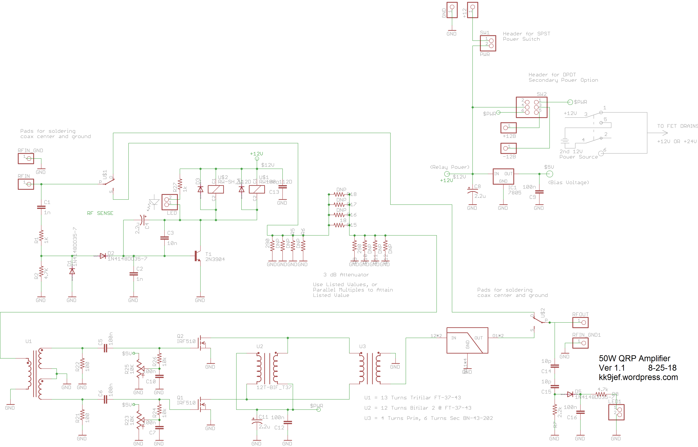
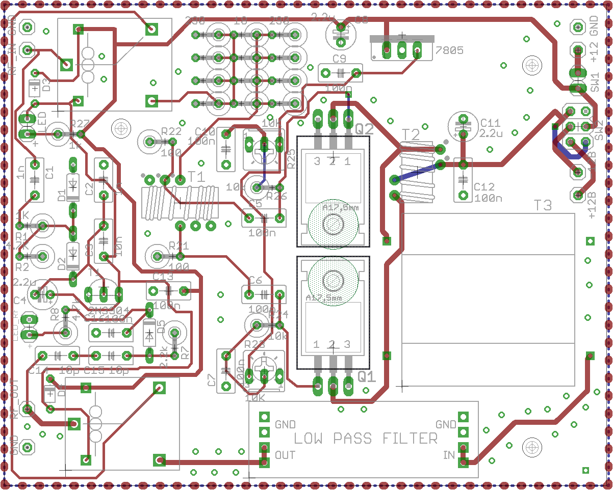
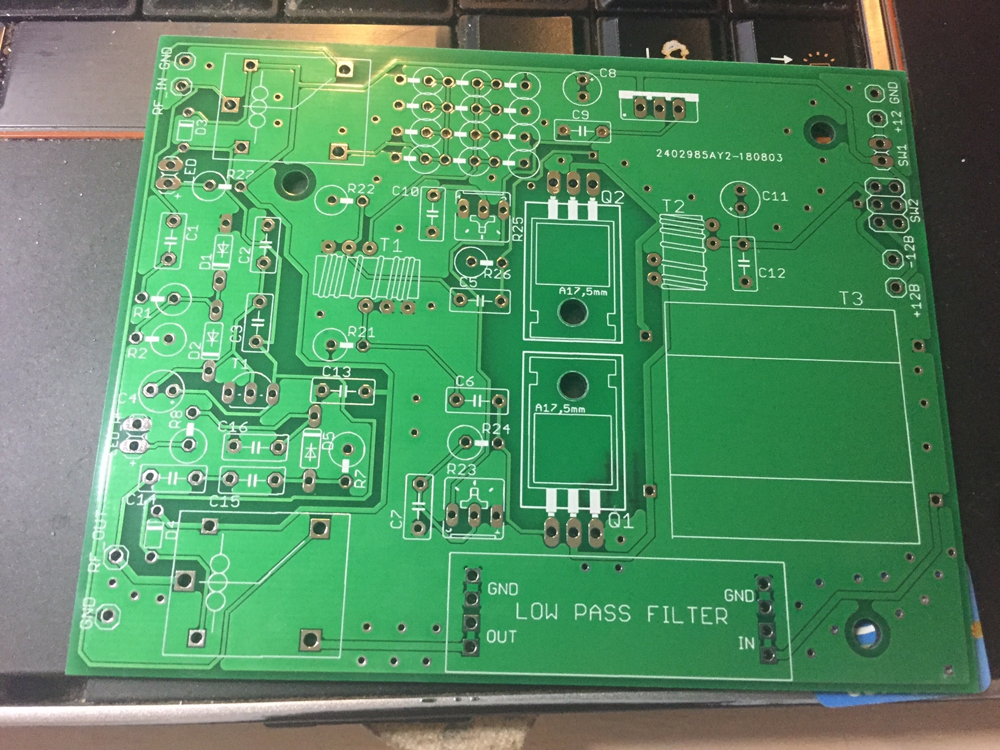
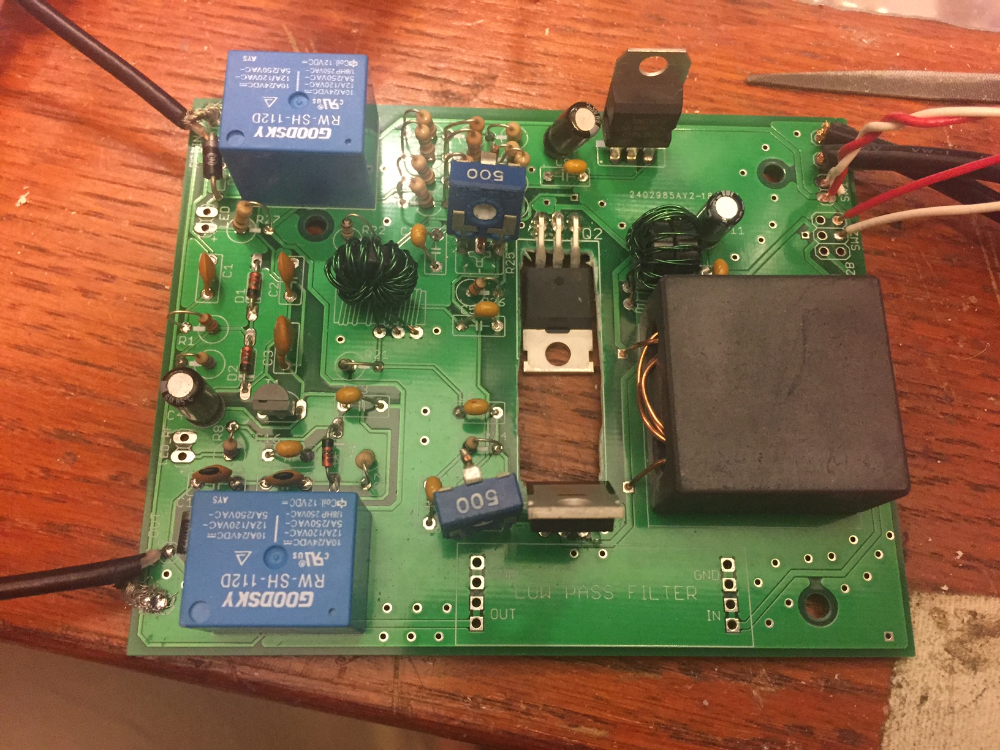

50W QRP Amplifier - Schematic, PCB Ver 1
The 5W-to-50W QRP HF Amplifier project is rolling along nicely - I received the first PCB draft in the male this week and am 90% of the way through assembling it, with only heatsink-placement left to sort out.
I've made a couple of additions to the schematic since the original layout, including a relay-activated indicator (R27 and its LED) and an RF-output sensing LED (from C14 to its associated LED to ground) along the the lines of VK3YE's recent project. There's also a space on the PCB now for a low pass filter with the same footprint as Hans Summers' LPFs over at QRP-Labs. Not that you'd necessarily want to reuse a QRP LPF for a 50W amp, you'd be in danger of putting too much voltage on the caps, but that would be a simple change.
Here's the schematic as it exists now:

And here's the current boards (layout, unpopulated, populated):



I've already got a little laundry list of things to modify for a second rev of this board, including, in no particular order:
- Swap the Diode placements the vertical to preserve board space
- Add footprints for alternate relay packages
- Add footprints for alternate trim-pot packages
- Re-think component designators for clarity
- Add bypass jumpers for the 3dB input pad and the LPF.
- For some reason, the none of the component values printed on the silkscreen, will need to sort that out
- I'm not sure if I screwed up how to designate a cutout or if JLCPCB doesn't do them for its bare-bones PCB service, but I'd like not to do the next set with a drill press and a nibbler.
Hoping to put this on the air soon for some signal tests. Hear you there!
73
This post is cross-posted to my ham-radio specific blog, kk9jef.wordpress.com.